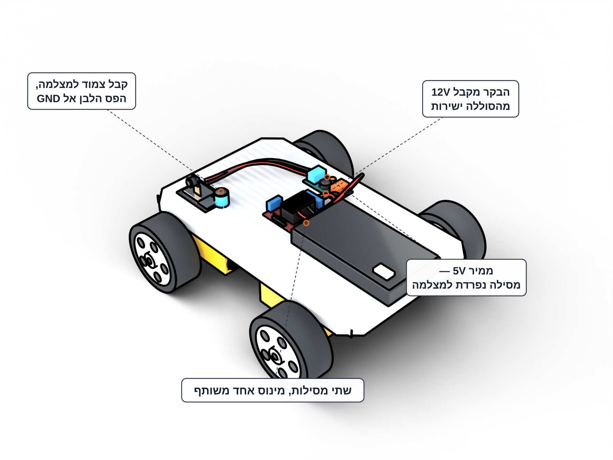

פרויקט 7 · סייר עם מצלמה
מסלול 1 · כרטיסייה V1
פרויקט #7 — סייר עם מצלמה: שלב 5 מתוך 9
מסילת חשמל נפרדת למצלמה
למצלמה יש כלל אחד גדול — חשמל משלה.
שלב 5 מתוך 955%
💡
מצלמה שחולקת חשמל עם מנועים מתאתחלת בלי סוף — לכן היא מקבלת מסילה נפרדת.

שתי מסילות, מינוס אחד משותף: הבקר מקבל 12V מהסוללה ישירות, והמצלמה מקבלת 5V נקיים מהממיר. הקבל צמוד למצלמה והפס הלבן שלו פונה אל GND.
📋
מה עושים
בודקים שהמתג של בית הסוללות כבוי ומשאירים אותו כבוי עד סוף השלב.
מחברים את הממיר הקטן (המורה כבר כיוון אותו ל-5V) אל חוטי בית הסוללות: IN+ אל הפלוס ו-IN- אל המינוס — לצד החיבורים 12V ו-GND של הבקר.
מחברים את היציאה של הממיר אל המצלמה: OUT+ אל חיבור 5V של ה-ESP32-CAM ו-OUT- אל חיבור GND.
מחברים את הקבל הגדול בין חיבור 5V ל-GND של ה-ESP32-CAM, צמוד למצלמה. הפס הלבן על הקבל פונה ל-GND, תמיד.
בודקים באצבע שהכול מחובר לאותו "מינוס": המינוס של הסוללות, GND של הבקר, OUT- של הממיר ו-GND של המצלמה.
🔌
מפת החשמל
🔋
Power Map — Two Rails
Battery 12V ────> L298N 12V / GND (motors) Battery 12V ────> Buck IN+ / IN- Buck OUT 5V ────> CAM 5V / GND (camera only!) Capacitor across CAM 5V-GND (stripe -> GND) All GND joined together

שתי מסילות חשמל: בית הסוללות (8 סוללות AA) אל 12V ו-GND של הבקר ואל IN של הממיר; OUT של הממיר (5V) אל 5V ו-GND של המצלמה, והקבל צמוד למצלמה. כל ה"מינוסים" מחוברים יחד.
👀
מה רואים אם הכול תקין
שתי מסילות מהסוללות — אחת למנועים ואחת למצלמה. הקבל צמוד למצלמה. שום דבר עוד לא דולק — המתג כבוי.
✅סיימתם כש:
✓הממיר מחובר לחוטי בית הסוללות — IN+ לפלוס ו-IN- למינוס
✓OUT+ אל חיבור 5V של ה-ESP32-CAM ו-OUT- אל GND
✓הפס הלבן על הקבל פונה ל-GND
✓כל ה"מינוסים" מחוברים יחד — סוללות, בקר, ממיר ומצלמה
✓המורה אישר שהחיווט נכון
🪄תקועים?
●לא בטוחים לאן פונה הפס הלבן — בודקים לפני שמדליקים, לא אחרי.
●שני חוטים מסתבכים — עוקבים באצבע מהסוללות עד היעד, חוט אחר חוט.
●קוראים למורה.